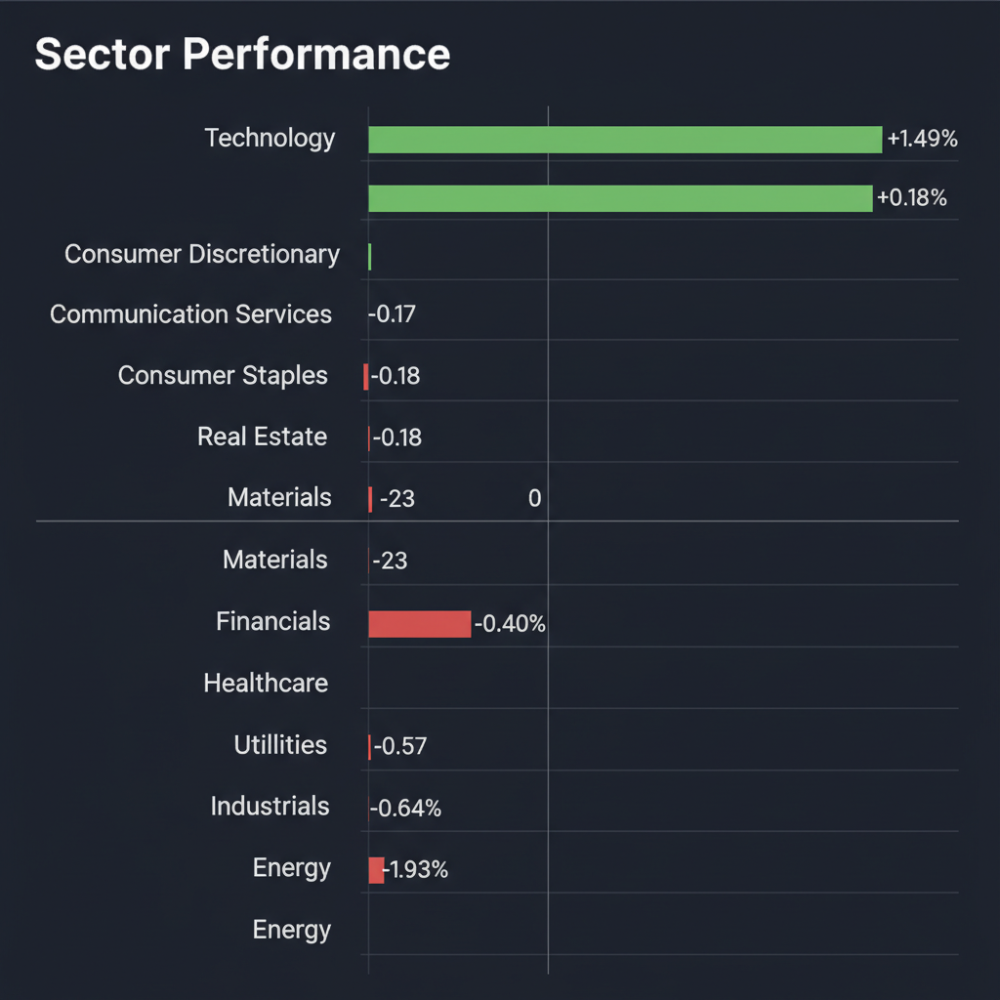
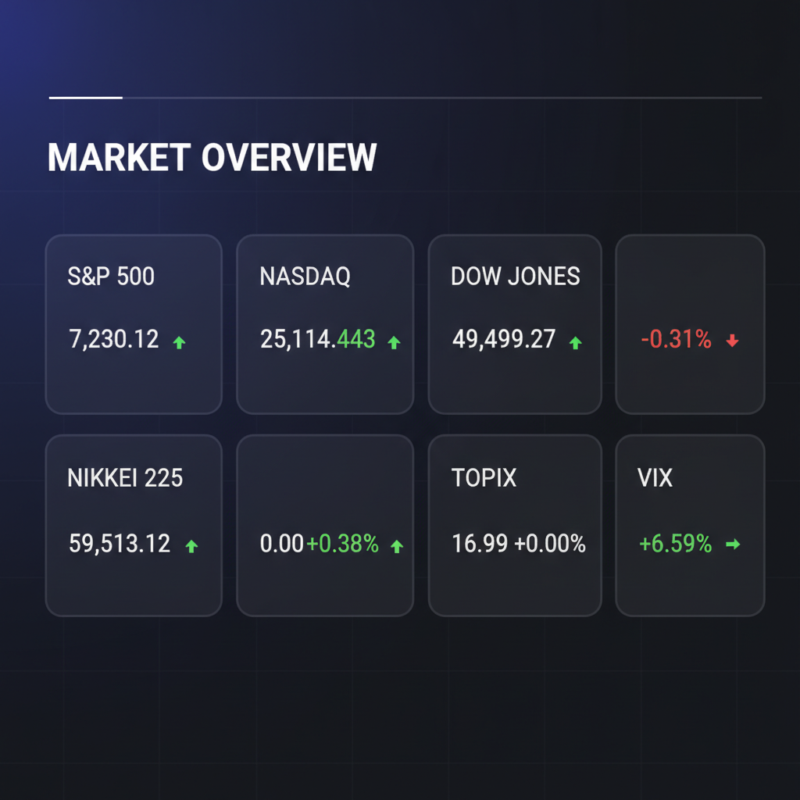

Daily Investment Report - 2026-05-04
Generated: 2026/5/4 7:22:23


本日の投資チームミーティングの分析を統合した、最新の市場動向および投資戦略に関する最終レポートをお届けします。
1. エグゼクティブサマリー
- 大型ハイテク株が市場を牽引する一方でダウの下落やVIXの上昇が起きており、極端な一極集中によるボラティリティ拡大のリスクが高まっています。
- 実体経済ではインフレによる企業のコスト削減や消費者の節約志向（低価格シフト）が鮮明になっており、マクロ経済の減速とAIの構造的成長が綱引きをする「K字型相場」の様相を呈しています。
- 投資戦略としては、大型株への過度な依存を減らしてキャッシュ比率を高めつつ、インフレ防衛力を持つ中小型バリュー株や、活発なM&Aの恩恵を受けるヘルスケア領域への資金シフトを推奨します。
2. 注目銘柄リスト
市場に十分認知されていない、隠れた成長ポテンシャルやディフェンシブ性を持つ中小型株を中心に選定しました。
強気（買い推奨）
- キュービーネットホールディングス (6571) [約150億円]: インフレ下で高まる消費者の「生活防衛・タイパ重視」ニーズに合致しており、価格改定による利益率改善も見込める手堅いビジネスモデルです。
- マテル (MAT) [約$6.5B]: 好決算で市場にポジティブサプライズを与えており、消費者の節約志向下でも手頃な価格帯の娯楽として底堅い需要が期待できます。
- Nebius Group (NBIS) [約$4B〜$5B]: AI特化型のGPUクラウドインフラを提供し、大手クラウドの隙間を突く急成長を見せる、次世代の隠れたテンバガー候補です。
中立（様子見）
- モダリス (4883) [数十億円]: 革新的な遺伝子治療技術を持ちM&Aの標的となるポテンシャルを秘めていますが、赤字による希薄化リスクとテクニカル面の下落トレンドから、底打ちを確認するまでエントリーは控えるべきです。
- Zoom Video Communications (ZM) [約$18B]: バリュエーションは一見割安ですが、トップラインの成長鈍化を福利厚生のカット等のコスト削減で補う防御的姿勢であり、バリュートラップに陥る懸念があります。
弱気（警戒）
- サンリオ (8136) [約4000億円]: 業績自体は好調なものの、不適切報酬問題による決算発表の延期などガバナンスリスクが顕在化しており、状況が完全にクリアになるまで機関投資家の資金流入は見込めません。
3. セクター推奨ランキング
景気後退期に強いディフェンシブ性に加え、大手製薬企業による有望なバイオベンチャー（TCE関連など）の買収が活発化しており、セクター全体にM&Aプレミアムが付与されやすい環境です。
中東の地政学リスク（イラン情勢・ホルムズ海峡の緊張）やインフレ再燃に対する強力なヘッジとして機能します。足元では売り込まれており、逆張りの好機と判断します。
巨大テック企業への投資が過熱する中、その巨額投資の「受け皿」となるニッチなインフラやデータセンター関連のサービスを提供する中小型株には依然として大きな成長余地があります。
国内の期待インフレ上昇の恩恵を受けやすく、コーポレートガバナンス改革の進展による海外投資家の資金流入が下値を支えます。
- 5位: 一般消費財（高価格帯・裁量消費）（※アンダーウェイト推奨）
消費者の明確な「実用性・低価格志向（3万ドル以下の自動車への回帰など）」により、高付加価値を前提としたビジネスモデルは利益率の圧迫が避けられないため回避を推奨します。
4. 今週の注目イベント
- 5月7日～8日: 日本の主力企業（トヨタ自動車、JT、任天堂）の決算発表
- 今週予定: 米国4月分 雇用統計（NFP・失業率）の発表
- 今週予定: 米国 消費者物価指数（CPI）の発表
- 随時: 中東情勢（米国・イラン間の地政学リスク動向と原油価格の推移）
5. リスク要因
- 地政学リスクとスタグフレーション: 中東情勢の悪化による原油価格の高騰がインフレを再燃させ、FRBが利下げを撤回（あるいは再利上げ）することで、ハイテク株のバリュエーションが崩壊するリスク。
- 集中リスクの巻き戻し: 一部の大型ハイテク株に市場の資金が集中しており、需要のわずかな鈍化やセンチメントの変化が、市場全体の急激な暴落（ボラティリティのスパイク）を引き起こす懸念。
- 実体経済の急速な冷却: 医療費高騰による企業のコスト削減（福利厚生カットなど）が雇用環境の悪化に波及し、消費者の購買力が限界を迎えて景気後退が早まるリスク。
- 為替の急変動リスク: 米国のインフレ高止まりと日銀の政策修正警戒が交錯し、突発的な円高ショックが発生した場合、日本株（特に大型輸出株）が打撃を受ける懸念。
6. アクションアイテム
- ポートフォリオ全体のキャッシュ比率を30%程度まで引き上げ、突発的なギャップダウンやボラティリティ拡大に備えた流動性を確保する。
- バリュエーションが極限まで切り上がった大型ハイテク株のポジションを一部利益確定し、強固なバランスシートを持つ中小型株へ資金を分散させる。
- ダウンサイドヘッジとして、エネルギー株（XLE等の関連銘柄）の組み入れや、安価な水準にあるVIXのコールオプションの購入を実行する。
- 自動車株や高単価な一般消費財株の保有がある場合、テクニカル上のサポートライン割れを厳格に設定し、損失拡大を防ぐストップロスの注文を入れておく。